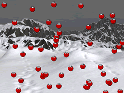

|
||||
Chapter 1 |
||||
Getting Started |
||||
|
||||
Chapter 1 |
||||
Getting Started |
||||
Installing TNT Basic is easy! Simply unstuff the TNT Basic archive to your hard disk.
Run Hieroglyph by double-clicking on it. Then choose "Open..." from the file menu. Locate and open the file called "Simple Example" in TNT Basic's "Examples" folder. You will be presented with a screen like the following:
 |
This is a TNT Basic project window, from here you can edit the project to create your game. Feel free to click the tabs and browse around the project! When you're done looking, choose "Run" from the TNT Basic menu, that's the one with the Barrel Icon |
|
Main Window in Hieroglyph
(Click to enlarge) |
|
|  |
This will launch TNT Basic if it's not already running and bounce a little green blob around the screen. Click the mouse button to exit. You've just ran your first TNT Basic program, congratulations! Why not try out some of the other examples in the examples folder? |
|
Bouncing Splats! Example Running
(Click to enlarge) |
Learning to code with TNT Basic couldn't be easier!
In TNT Basic's help system there are tutorials covering the basics of programming and all of TNT Basic's commands. All you need is a good imagination and the desire to explore and try things out!
To access TNT Basic's help, select "TNT Basic Help" from Hieroglyph's or TNT Basic's "Help" menu.
You can also find a huge selection of tutorials and samples online at www.tntbasic.com!